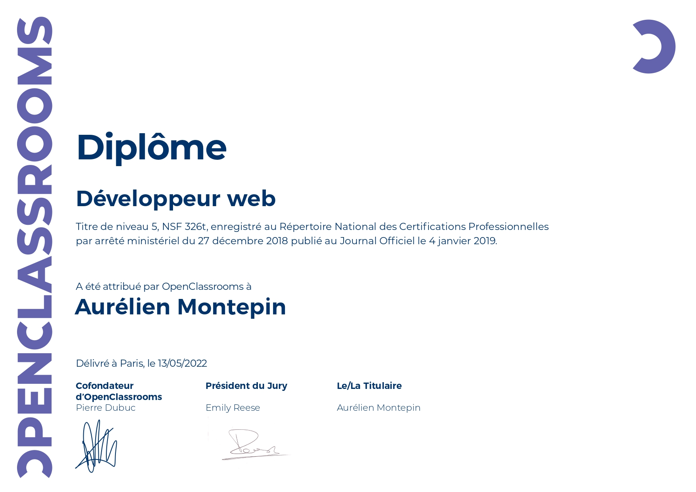
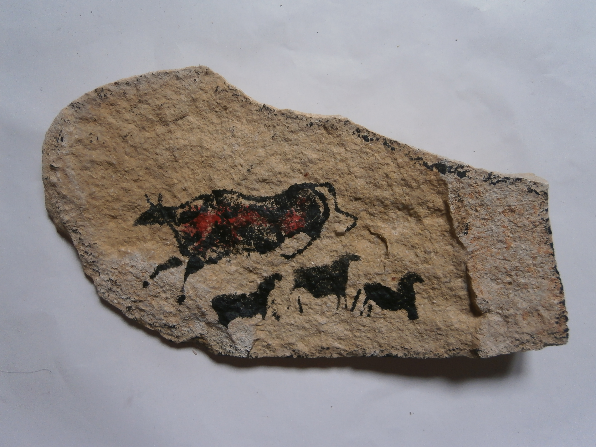
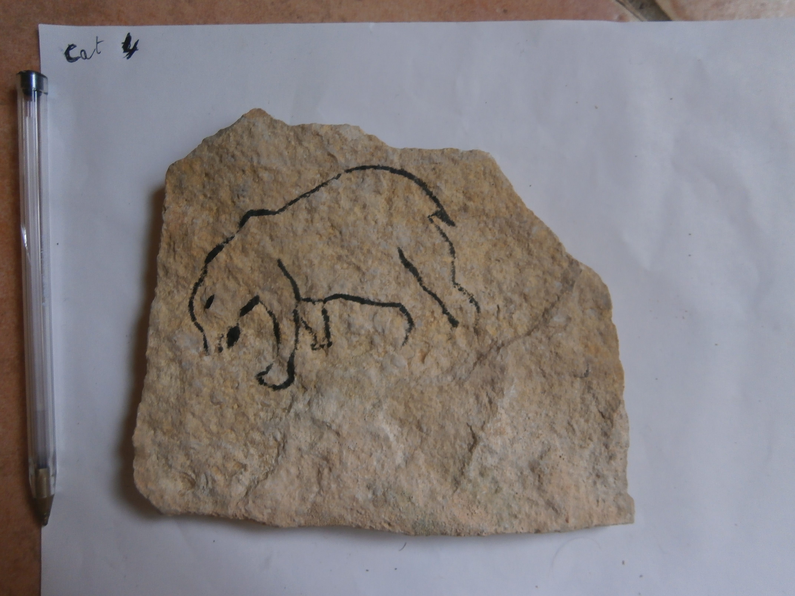
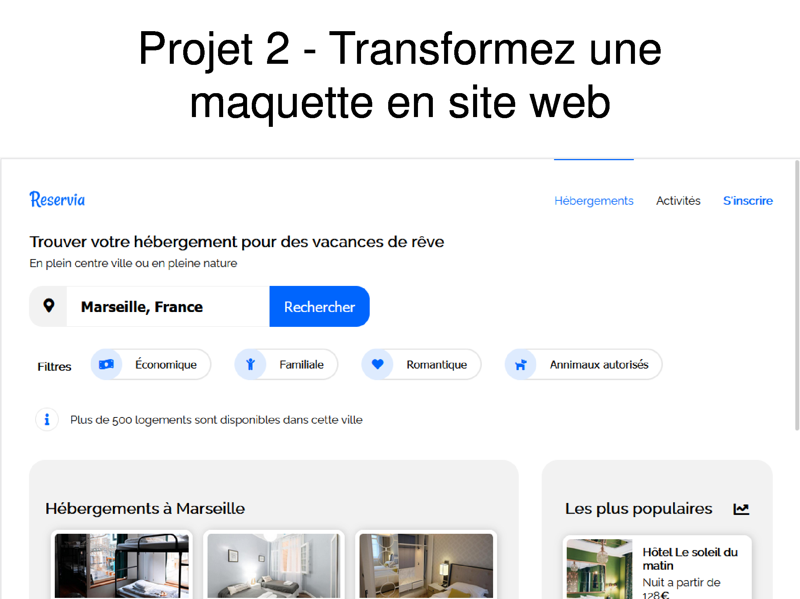
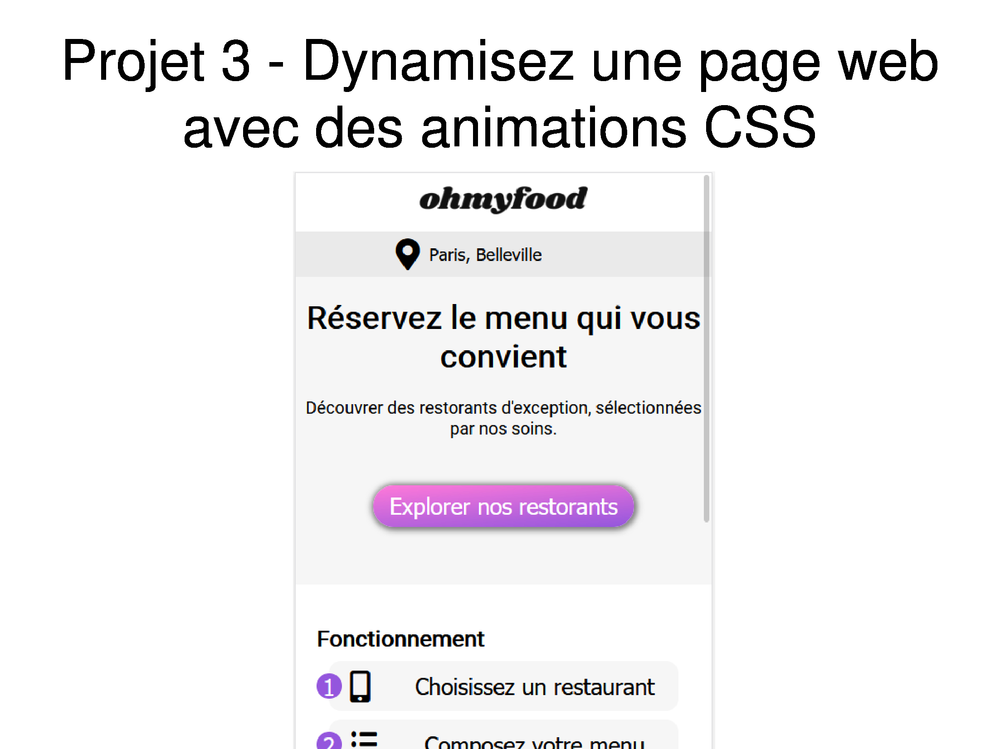
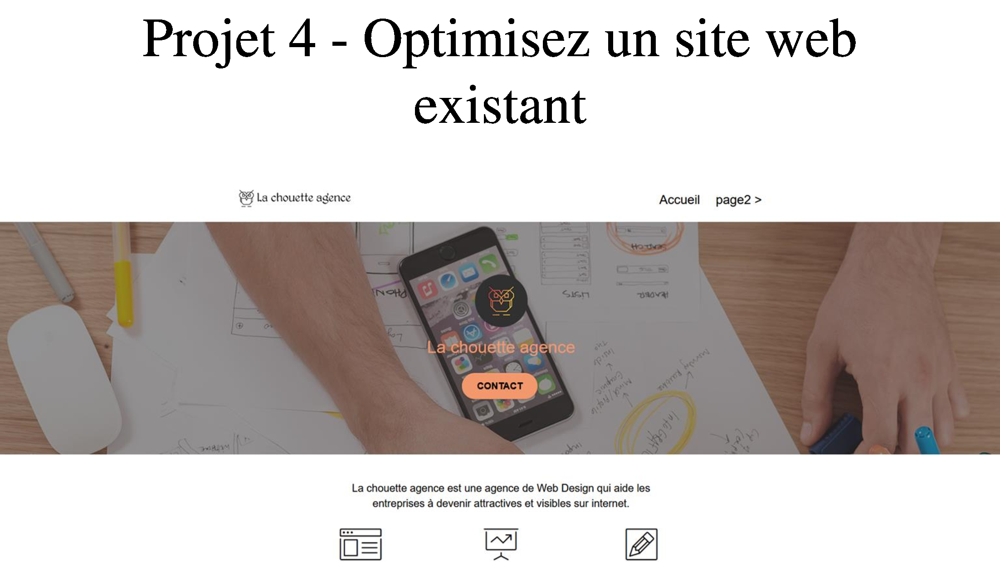
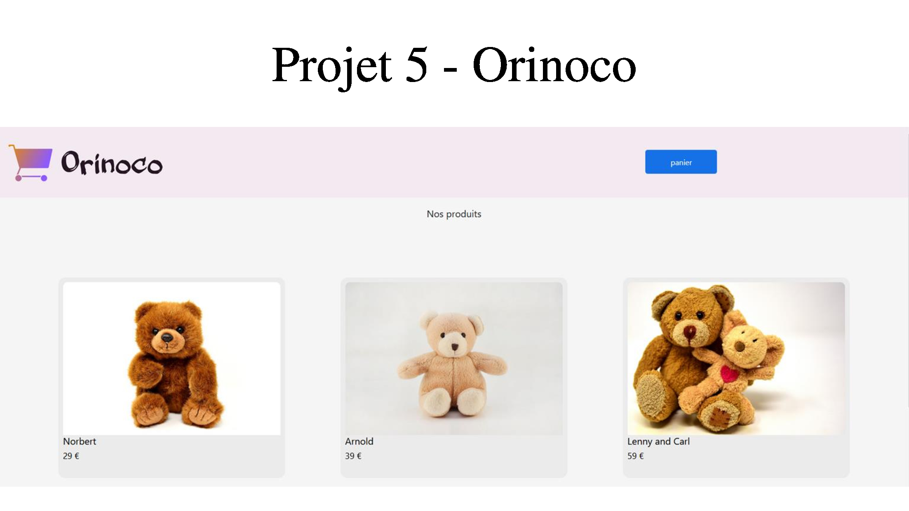
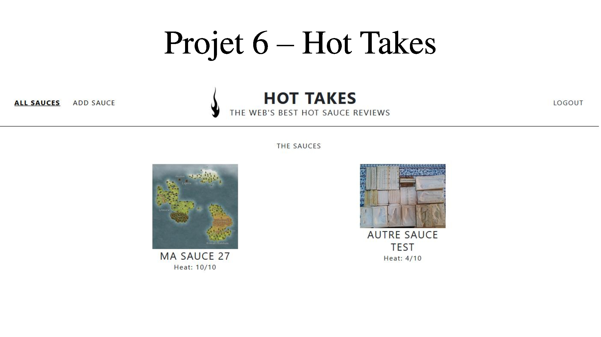
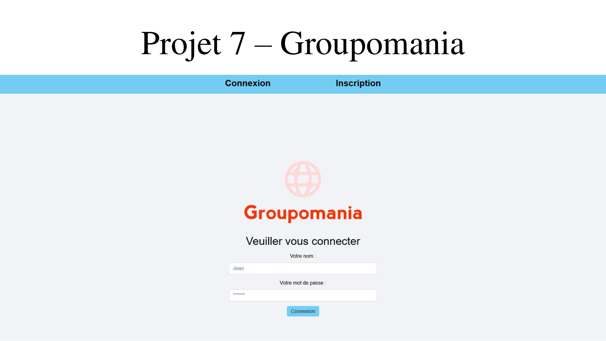
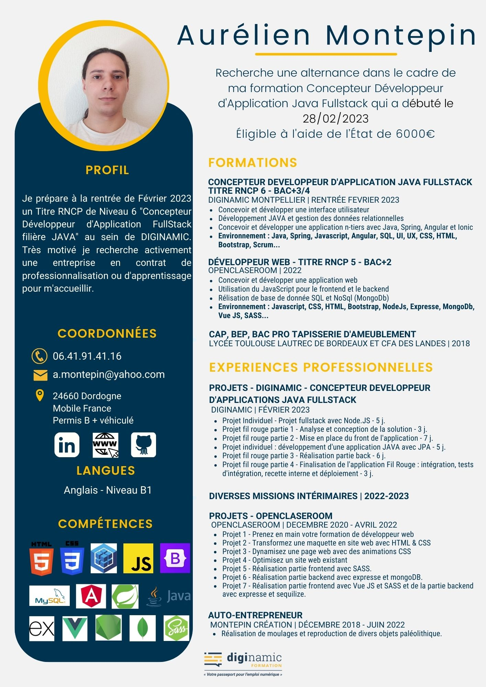

Présentation
Je suis titulaire d'un bac +2 de développeur web et suis actuellement en recherche d'alternance dans le cadre d'une formation pour passé un bac +4 en de développeur JAVA avec Diginamic.
J'ai à l'origine obtenu un bac pro de tapisserie d'ameublement avant de me perfectionner au cours d'une année d'apprentisage. Malheureusement, durant les quatres ans que j'ai passé dans le millieu, j'ai vu un certain nombre d'artisants fermés ou me parler de le faire. Je n'ai donc pas osé essayer de m'installer et j'ai chercher une autre solution.
Par chance, mon père connaissait les propriétaires d'un site touristique de dordogne qui recherchaient un artisan capable de réaliser des moulages et quelques autres objets comme des colliers et des pierres peintes à vendre aux clients. C'est ainsi que je suis devenu autoentrepreneur.
Lors de mon inscription à la chambre des métiers et de l'artisanat, ni moi ni le personnel n'avons trouvé de bon libélé pour le secteur d'activité qui fut finalement : Fabrication d'autres ouvrages en béton, en ciment ou en plâtre. Une affaire qui me valut quelques appels de la part de commerciaux inquiés pour me faire signer une assurance décennale au cas où, un jour, je touche au mur d'un batiment...
Je n'avais aucune envie de rester mouleur toute ma vie et j'ai donc décidé de passer une formation de développeur web sur open classeroom.
Part la suite, j'ai réussi ma formation et fermé mon affaire pour être réellement disponible sur le marché de l'emploi. Je n'ai cependant pas trouvé ce que je voulais, alors j'ai commencé a faire de l'intérim en attendant.
Un jour, j'ai cependant reçu un appel pour me proposer de me lancé dans l'aventure Diginamic, n'ayant de toute façon que peut à y perdre et, potentiellement beaucoup à y gagner, j'ai accepté. C'est pourquoi je suis actuellement à la recherche d'un contrat en alternance.



Galerie Projet
Voici quelque images de mes réalisations en temps que développeur.







CV
